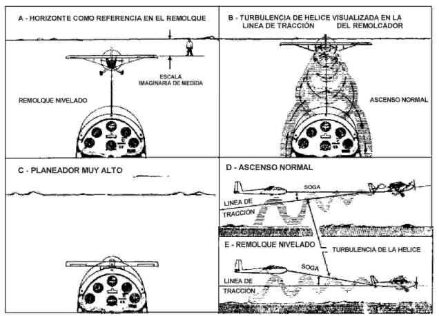

CURSO TEÓRICO
DE
PILOTO DE PLANEADOR
[ Arriba ] [ 1ª Sección ] [ 2ª Sección ] [ 3ª Sección ] [ 4ª Sección ] [ 5ª Sección ] [ 6ª Sección ] [ 7ª Sección ] [ 8ª Sección ] [ 9ª Sección ] [ 10ª Sección ] [ 11ª Sección ] [ 12ª Sección ] [ 13ª Sección ] [ 14ª Sección ] [ 15ª Sección ]
10ª Sección: POSICIONES EN REMOLQUE
POSICIONES EN REMOLQUE
El
problema básico del remolque por avión es que la mayoría de los planeadores no son
estables al ser remolcados. Es decir que no volarán por sí mismos como lo hacen en vuelo
librado, aun cuando estén debidamente compensados. Por lo tanto, la operación exige una
atención constante. 
El conocimiento básico a adquirir y desarrollar es
anticipar las desviaciones de las posiciones correctas previniéndolas.
Correcciones pequeñas, realizadas al menor signo de
cambio en la posición requerida, proporcionarán los mejores resultados.
Otra dificultad es la que se produce cuando una
corrección es aplicada o mantenida en exceso, causando sobrecontrol.
Como referencia para una correcta operación pueden
emplearse dos sistemas. Uno es mantener el avión remolcador en una posición fija
respecto al horizonte, como si la parte superior de sus alas se mantuviera a una altura
aproximadamente igual a la estatura de un hombre por debajo de su línea. Sin embargo,
esta relación planeador-avión-horizonte puede variar. En el despegue un horizonte
cercano o "falso" es más alto que el verdadero visto en un día claro a mayores
alturas. Con visibilidad restringida, este método inducirá al piloto del planeador a
volar más alto con relación al avión que en un día claro. Las zonas montañosas
también pueden crear falsos horizontes y hacer dificultosa su identificación. Sin
embargo su empleo es satisfactorio y no producirá desplazamientos extremos. (Fig. Nº 4 A.)
El sistema más efectivo, donde la referencia no cambia
con las condiciones de altura o visibilidad, es mantener la posición con referencia al
eje o línea de tracción del remolcador. Realmente esto es como volar en formación y el
único medio efectivo a emplear con visibilidad restringida.
La turbulencia de la hélice y los vórtices marginales
-al alejarse del eje mencionado y dentro del largo de la línea de remolque- deben
evitarse. Es esencial aprender y dominar ambos métodos para ser remolcado,
familiarizándose asimismo con la posición y efectos de las perturbaciones expresadas.
La ubicación de las referidas perturbaciones se muestran
en la figura Nº 4 B de la combinación
avión-planeador ascendiendo.
Nótese por comparación con la figura Nº 4 D y E que la
relación entre ambas máquinas
y el ángulo de desplazamiento de los vórtices
respectivos con la cola del avión, permanecen relativamente al mismo nivel en ascenso que
en vuelo nivelado.
Figura
Nº 4 – Posiciones en remolque
Volar
remolcado es un problema comparable a volar recto y nivelado en un avión. Las
correcciones requieren una presión suave y coordinada de los mandos. Las referencias a
las que se debe responder para aplicarlas son la apariencia de una banda ancha o angosta
de superficie horizontal del ala respecto al horizonte, que indica que el planeador está
ascendiendo o descendiendo fuera de su posición correcta, o que no continúa alineado con
el eje longitudinal del remolcador y está serpenteando de un lado a otro de la línea de
tracción. Generalmente esto se debe a que las alas de ambas aeronaves no se mantienen
paralelas. El piloto del planeador debe verificar su ángulo de inclinación con el del
avión por comparación de cómo la parte superior de su panel de instrumentos se alinea
con el ala del avión, y no mirando a esta última.
Los errores que se desarrollan en remolque son comúnmente
consecuencia de aguardar demasiado en corregir lo que aparentemente es sólo una pequeña
desviación respecto a la referencia generalmente empleada. El más fácil de cometer es
colocarse demasiado alto, tal como se aprecia en la figura 4 C. Es el más difícil de
corregir porque el planeador puede sobrepasar al avión cuando baja la nariz para asumir
la posición correcta. Si la soga se encoge, cuando vuelva a estirarse habrá un fuerte
tirón que puede cortarla o lanzar de nuevo al planeador -como una piedra arrojada con una
honda- a su posición anterior.
Una resistencia extra producida con un pequeño
deslizamiento o patinada, normalmente conseguirá obtener la corrección para no
sobrepasar al avión. También pueden emplearse los spoilers y frenos de picada -en casos
extremos-, para evitar este problema.
Sin embargo, con una técnica correcta será posible
desarrollar la habilidad para mantener la posición adecuada sin emplear estos métodos.
Si se produce una apreciable disminución en la tensión
de la línea, el tirón subsecuente al eliminarla puede atenuarse cruzando la máquina
hacia uno u otro lado con el timón de dirección.
En un viraje el cruzamiento debe ser en sentido opuesto al
mismo. Sin embargo, el planeador deberá seguir la trayectoria curva del avión, puesto
que de lo contrario se producirá un severo “latigazo”. Este cruzamiento se
obtendrá aplicando el pedal exterior y aumentando ligeramente la inclinación del giro.
Cuando la soga se estire se aplicará presión adelante en
la palanca para prevenir un nuevo ascenso.
Otro error frecuente consiste en corregir excesivamente
para recobrar la posición normal; es el ya familiar sobrecontrol y debe evitarse
disminuyendo la presión en el mando cuando la aeronave comienza a reaccionar, de modo que
la contrapresión se aplicará antes de asumir la posición deseada (una buena técnica
requiere que las oscilaciones laterales no excedan de los 15º).
Por último existe la posibilidad de entrar en la
turbulencia de la hélice y los vórtices marginales.
Una vez lograda la posición normal deberán emplearse los
controles de compensación para eliminar cualquier esfuerzo de presión adelante-atrás
que se esté ejerciendo en la palanca de comando.
Los planeadores equipados con tomas de remolque por debajo
de su eje longitudinal requieren usualmente presión hacia adelante o compensación
“nariz abajo” durante el vuelo remolcado.
Esta compensación es diferente a la utilizada para
velocidades de planeo normales y las presiones de control para el primer caso son
considerablemente mayores que para menores velocidades.
El remolque en vuelo nivelado o descendente es más
dificultoso que en ascenso.
Durante los descensos el remolcador debe reducir la potencia por debajo de la requerida
para remolque nivelado a fin de obtener un descenso gradual.
Un planeador de gran performance es más dificultoso de
remolcar que uno con mayor resistencia al avance.
Volver Arriba